Dasar-dasar Teks (Text Basics)
Menggunakan titik penyisipan untuk menambahkan teks
Titik penyisipan adalah garis vertikal yang berkedip di dokumen Anda. Ini menunjukkan di mana Anda dapat memasukkan teks pada halaman. Anda dapat menggunakan titik penyisipan dalam berbagai cara.
Dokumen kosong : Saat dokumen kosong baru terbuka, titik penyisipan akan muncul di sudut kiri atas halaman. Jika mau, Anda dapat mulai mengetik dari lokasi ini.

Menambahkan spasi : Tekan bilah spasi untuk menambahkan spasi setelah kata atau di antara teks.

Baris paragraf baru : Tekan Enter pada keyboard Anda untuk memindahkan titik penyisipan ke baris paragraf berikutnya.

Penempatan manual :Setelah Anda mulai mengetik, Anda dapat menggunakan mouse untuk memindahkan titik penyisipan ke tempat tertentu di dokumen Anda. Cukup klik lokasi di teks tempat Anda ingin meletakkannya.

Tombol panah : Anda juga dapat menggunakan tombol panah pada keyboard untuk memindahkan titik penyisipan. The meninggalkan dan kanan tombol panah akan bergerak antara karakter yang berdekatan pada baris yang sama, sedangkan up dan turun panah akan bergerak antara garis ayat. Anda juga dapat menekan Ctrl+Left atau Ctrl+Right untuk berpindah antar kata dengan cepat.
Dalam dokumen kosong baru, Anda dapat mengklik dua kali mouse untuk memindahkan titik penyisipan ke tempat lain di halaman.
Memilih teks
Sebelum Anda dapat memindahkan atau memformat teks, Anda harus memilihnya. Untuk melakukan ini, klik dan seret mouse Anda ke atas teks, lalu lepaskan mouse. Kotak yang disorot akan muncul di atas teks yang dipilih.

Saat Anda memilih teks atau gambar di Word, bilah alat arahkan kursor dengan pintasan perintah akan muncul. Jika bilah alat tidak muncul pada awalnya, coba arahkan mouse ke atas pilihan.

Untuk memilih beberapa baris teks:
Gerakkan penunjuk tetikus ke kiri garis mana pun sehingga menjadi panah miring ke kanan.

Klik mouse. Garis akan dipilih.

Untuk memilih beberapa baris, klik dan seret mouse ke atas atau ke bawah.
Untuk memilih semua teks dalam dokumen Anda, pilih perintah Select pada tab Home, lalu klik Select All. Anda juga dapat menekan Ctrl + A pada keyboard Anda.

Pintasan lainnya termasuk mengklik dua kali untuk memilih kata dan mengklik tiga kali untuk memilih seluruh kalimat atau paragraf.
Untuk menghapus teks:
Ada beberapa cara untuk menghapus, atau menghapus, teks:
Untuk menghapus teks di sebelah kiri titik penyisipan, tekan tombol Backspace pada keyboard Anda.
Untuk menghapus teks di sebelah kanan titik penyisipan, tekan tombol Delete pada keyboard Anda.
Pilih teks yang ingin Anda hapus, lalu tekan tombol Hapus.
Jika Anda memilih teks dan mulai mengetik, teks yang dipilih akan otomatis dihapus dan diganti dengan teks baru.
Menyalin dan memindahkan teks
Word memungkinkan Anda untuk menyalin teks yang sudah ada di dokumen Anda dan menempelkannya di tempat lain, yang dapat menghemat banyak waktu dan tenaga. Jika Anda ingin memindahkan teks di dalam dokumen Anda, Anda dapat memotong dan menempelkan atau menyeret dan melepaskan.
Untuk menyalin dan menempel teks:
Pilih teks yang ingin Anda salin.

Klik perintah Salin pada tab Beranda. Anda juga dapat menekan Ctrl+C pada keyboard Anda.

Tempatkan titik penyisipan di tempat Anda ingin teks muncul.
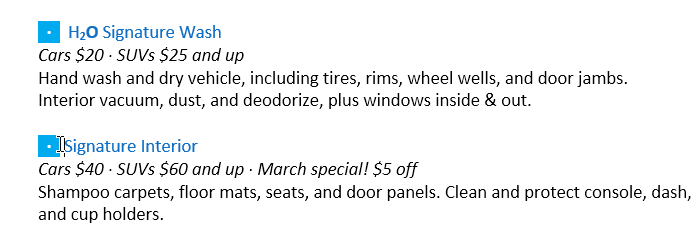
Klik perintah Tempel pada tab Beranda. Anda juga dapat menekan Ctrl+V pada keyboard Anda.

Teks akan muncul.
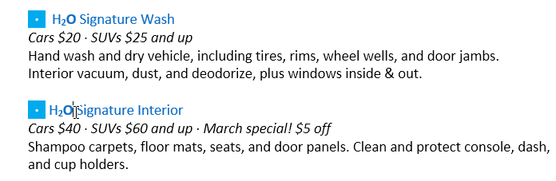
Untuk memotong dan menempelkan teks:
Pilih teks yang ingin Anda potong.
Klik perintah Potong pada tab Beranda. Anda juga dapat menekan Ctrl + X pada keyboard Anda.

Tempatkan titik penyisipan Anda di tempat Anda ingin teks muncul.

Klik perintah Tempel pada tab Beranda. Anda juga dapat menekan Ctrl+V pada keyboard Anda.
Teks akan muncul.

Anda juga dapat memotong, menyalin, dan menempel dengan mengklik kanan dokumen Anda dan memilih tindakan yang diinginkan dari menu tarik-turun. Saat Anda menggunakan metode ini untuk menempel, Anda dapat memilih dari tiga opsi yang menentukan bagaimana teks akan diformat: Keep Source Formatting, Merge Formatting, dan Keep Text Only. Anda dapat mengarahkan mouse ke setiap ikon untuk melihat seperti apa tampilannya sebelum Anda memilihnya.
Untuk menarik dan melepaskan teks:
Pilih teks yang ingin Anda pindahkan.

Klik dan seret teks ke lokasi yang Anda inginkan untuk memunculkannya. Sebuah persegi panjang kecil akan muncul di bawah panah untuk menunjukkan bahwa Anda sedang memindahkan teks.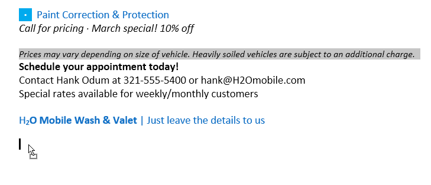
Lepaskan mouse, dan teks akan muncul.

Jika teks tidak muncul di lokasi yang Anda inginkan, Anda dapat menekan tombol Enter pada keyboard untuk memindahkan teks ke baris baru.
Batalkan dan Ulangi
Katakanlah Anda sedang mengerjakan sebuah dokumen dan secara tidak sengaja menghapus beberapa teks. Untungnya, Anda tidak perlu mengetik ulang semua yang baru saja Anda hapus! Word memungkinkan Anda untuk membatalkan tindakan terbaru saat Anda melakukan kesalahan seperti ini.
Untuk melakukannya, cari dan pilih perintah Undo pada Quick Access Toolbar. Anda juga dapat menekan Ctrl+Z pada keyboard Anda. Anda dapat terus menggunakan perintah ini untuk membatalkan beberapa perubahan berturut-turut.

Sebaliknya, perintah Redo memungkinkan Anda untuk membalikkan undo terakhir. Anda juga dapat mengakses perintah ini dengan menekan Ctrl+Y pada keyboard Anda.

Simbol
Jika Anda perlu memasukkan karakter yang tidak biasa yang tidak ada di keyboard Anda, seperti a hak cipta (©) atau merek dagang (™), Anda biasanya dapat menemukannya dengan perintah Simbol.
Untuk menyisipkan simbol:
Tempatkan titik penyisipan di tempat Anda ingin simbol muncul.
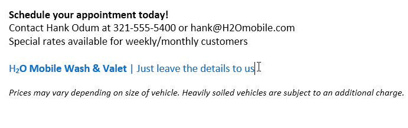
Klik tab Sisipkan.

Cari dan pilih perintah Simbol, lalu pilih simbol yang diinginkan dari menu tarik-turun. Jika Anda tidak melihat yang Anda inginkan, pilih Simbol Lainnya...

Simbol akan muncul di dokumen.

Tantangan!
Buka dokumen latihan kami.
Gulir ke halaman 2.
Tempatkan titik penyisipan di bagian atas dokumen dan ketik Now Introducing...
Gunakan tombol panah Anda untuk memindahkan titik penyisipan ke harga Paket Detail Tanda Tangan dan ubah menjadi $99,99 /bln.
Di bagian bawah dokumen, gunakan seret dan lepas untuk bergerak Serahkan saja detailnya kepada kami hingga akhir baris terakhir.
Di akhir baris yang baru saja Anda pindahkan, masukkan simbol merek dagang. Jika Anda tidak dapat menemukan simbol merek dagang, masukkan simbol lain pilihan Anda.
Setelah selesai, dokumen Anda akan terlihat seperti ini:
Memformat Teks (Formatting Text)
Teks yang diformat dapat menarik perhatian pembaca ke bagian tertentu dari dokumen dan menekankan informasi penting. Di Word, Anda memiliki beberapa opsi untuk menyesuaikan teks, termasuk font, size, dan color. Anda juga dapat menyesuaikan perataan teks untuk mengubah tampilannya di halaman.
Untuk mengubah ukuran font:
Pilih teks yang ingin Anda ubah.
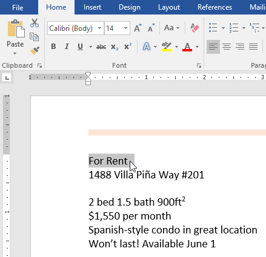
Pada tab Beranda, klik panah tarik-turun Ukuran Font. Pilih ukuran font dari menu. Jika ukuran font yang Anda butuhkan tidak tersedia di menu, Anda dapat mengklik kotak Font Size dan ketik ukuran yang diinginkan, lalu tekan Enter.

Ukuran font akan berubah dalam dokumen.

Anda juga dapat menggunakan perintah Grow Font dan Shrink Font untuk mengubah ukuran font.
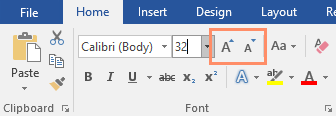
Untuk mengubah font:
Secara default, font setiap dokumen baru diatur ke Calibri. Namun, Word menyediakan banyak font lain yang dapat Anda gunakan untuk menyesuaikan teks.
Pilih teks yang ingin Anda ubah.

Pada tab Beranda, klik panah tarik-turun di samping kotak Font. Menu gaya font akan muncul.
Pilih gaya font yang ingin Anda gunakan.

Font akan berubah dalam dokumen.
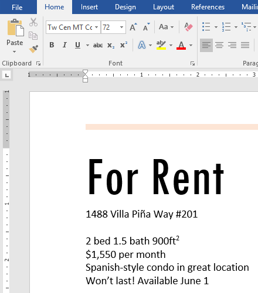
Saat membuat dokumen profesional atau dokumen yang berisi beberapa paragraf, sebaiknya pilih font yang mudah dibaca. Seiring dengan Calibri, font bacaan standar termasuk Cambria, Times New Roman, dan Arial.
Untuk mengubah warna font:
Pilih teks yang ingin Anda ubah.

Pada tab Beranda, klik panah turun bawah Warna Font. The Font Color menu muncul.

Pilih warna font yang ingin Anda gunakan. Warna font akan berubah dalam dokumen.
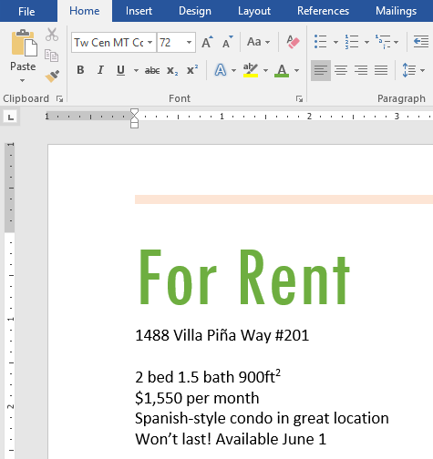
Pilihan warna Anda tidak terbatas pada menu drop-down yang muncul. Pilih More Colors di bagian bawah menu untuk mengakses kotak dialog Colors. Pilih warna yang Anda inginkan, lalu klik OK.

Untuk menggunakan perintah Tebal, Miring, dan Garis Bawah:
Perintah Tebal, Miring, dan Garis Bawah dapat digunakan untuk membantu menarik perhatian pada kata atau frasa penting.
Pilih teks yang ingin Anda ubah.

Pada tab Beranda, klik perintah Tebal ( B ), Miring ( I ), atau Garis Bawah ( U ) di grup F ont. Dalam contoh kita, kita akan mengklik Bold.
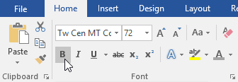
Teks yang dipilih akan diubah dalam dokumen.

Untuk mengubah huruf besar/kecil teks:
Saat Anda perlu mengubah huruf besar/kecil teks dengan cepat, Anda dapat menggunakan perintah Ubah Huruf Besar-kecil daripada menghapus dan mengetik ulang teks.
Pilih teks yang ingin Anda ubah.

Pada tab Beranda, klik perintah Ubah Kasus di grup Font.
Menu tarik-turun akan muncul. Pilih opsi kasus yang diinginkan dari menu.

Kasus teks akan diubah dalam dokumen.

Untuk menyorot teks:
Menyoroti dapat menjadi alat yang berguna untuk menandai teks penting dalam dokumen Anda.
Pilih teks yang ingin Anda sorot.

Dari tab Beranda, klik panah tarik-turun Warna Sorotan Teks. The Highlight Color menu muncul.

Pilih warna sorotan yang diinginkan. Teks yang dipilih kemudian akan disorot dalam dokumen.
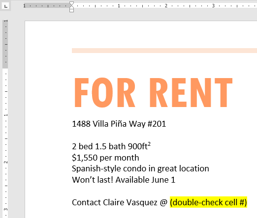
Untuk menghapus sorotan, pilih teks yang disorot, lalu klik panah drop-down Warna Sorotan Teks. Pilih Tanpa Warna dari menu tarik-turun.

Jika Anda perlu menyorot beberapa baris teks, mengubah mouse menjadi stabilo dapat menjadi alternatif yang berguna untuk memilih dan menyorot setiap baris. Klik perintah Warna Sorotan Teks, dan kursor berubah menjadi stabilo. Anda kemudian dapat mengklik dan menyeret stabilo di atas garis yang ingin Anda sorot.
Untuk mengubah perataan teks:
Secara default, Word meratakan teks ke margin kiri dalam dokumen baru. Namun, ada kalanya Anda ingin menyesuaikan perataan teks ke tengah atau ke kanan.
Pilih teks yang ingin Anda ubah.

Pada tab Beranda, pilih salah satu dari empatopsi penyelarasan dari grup Paragraf. Dalam contoh kita, kita telah memilih Center Alignment.

Teks akan diselaraskan kembali dalam dokumen.

Klik panah di tayangan slide di bawah ini untuk mempelajari lebih lanjut tentang empat opsi perataan teks.
arrow_back_ios

Align Text Left : Ini menyelaraskan semua teks yang dipilih ke margin kiri. Perintah Align Text Left adalah perataan paling umum dan dipilih secara default saat dokumen baru dibuat.
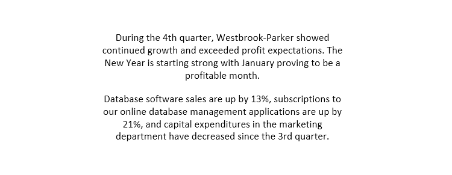
Tengah : Ini menyelaraskan teks dengan jarak yang sama dari margin kiri dan kanan.

Align Text Right : Ini menyelaraskan semua teks yang dipilih ke margin kanan.

Justify : Teks yang dibenarkan sama di kedua sisi. Ini berbaris sama ke margin kanan dan kiri. Banyak surat kabar dan majalah menggunakan justifikasi penuh.
arrow_back_ios
Anda dapat menggunakan fitur Set as Default dari Word untuk menyimpan semua perubahan pemformatan yang telah Anda buat dan secara otomatis menerapkannya ke dokumen baru. Untuk mempelajari cara melakukannya, baca artikel kami tentang Mengubah Pengaturan Default Anda di Word.
Tantangan!
Buka dokumen latihan kami.
Gulir ke halaman 2.
Pilih kata For Rent dan ubah ukuran font menjadi 48 pt.
Dengan teks yang masih dipilih, ubah font menjadi Franklin Gothic Demi. Catatan : Jika Anda tidak melihat font ini di menu, Anda dapat memilih yang lain.
Gunakan perintah Change Case untuk mengubah For Rent menjadi UPPERCASE.
Ubah warna tulisan For Rent menjadi Gold, Accent 4.
Hapus sorotan dari nomor telepon (919-555-7237).
Pilih semua teks dari For Rent hingga (919-555-7237) dan Center Align.
Miringkan teks dalam paragraf di bawah Tentang Villa Piña.
Setelah selesai, halaman Anda akan terlihat seperti ini:

Menggunakan Find and Replace
Saat Anda bekerja dengan dokumen yang lebih panjang, akan sulit dan memakan waktu lama untuk menemukan kata atau frasa tertentu. Word dapat secara otomatis mencari dokumen Anda menggunakan fitur Temukan, dan memungkinkan Anda mengubah kata atau frasa dengan cepat menggunakan Ganti.
Untuk menemukan teks:
Dalam contoh kami, kami telah menulis makalah akademis dan akan menggunakan perintah Temukan untuk menemukan semua contoh kata tertentu.
Dari tab Beranda, klik perintah Temukan. Anda juga dapat menekan Ctrl+F pada keyboard Anda.

The panel navigasi akan muncul di sisi kiri layar.
Ketikkan teks yang ingin Anda temukan di bidang di bagian atas panel navigasi. Dalam contoh kita, kita akan mengetikkan kata yang kita cari.

Jika teks ditemukan dalam dokumen, teks akan disorot dengan warna kuning dan pratinjau hasilnya akan muncul di panel navigasi. Anda juga dapat mengklik salah satu hasil di bawah panah untuk melompat ke sana.

Setelah selesai, klik X untuk menutup panel navigasi. Sorotan akan hilang.

Untuk opsi penelusuran lainnya, klik panah tarik-turun di samping bidang penelusuran.

Untuk mengganti teks:
Anda mungkin menemukan bahwa Anda telah membuat kesalahan berulang kali di seluruh dokumen Anda, seperti salah mengeja nama seseorang, atau bahwa Anda perlu menukar kata atau frasa tertentu dengan yang lain. Anda dapat menggunakan fitur Temukan dan Ganti Word untuk melakukan revisi dengan cepat. Dalam contoh kami, kami akan menggunakan Temukan dan Ganti untuk mengubah judul majalah sehingga disingkat.
Dari tab Beranda, klik perintah Ganti. Anda juga dapat menekan Ctrl+H pada keyboard Anda.

The Cari dan Ganti kotak dialog akan muncul.
Ketik teks yang ingin Anda temukan di Find apa: lapangan.
Ketik teks yang ingin Anda ganti di bidang Ganti dengan :, lalu klik Temukan Berikutnya.

Word akan menemukan teks pertama dan menyorotnya dalam warna abu-abu.
Tinjau teks untuk memastikan Anda ingin menggantinya. Dalam contoh kita, teks adalah bagian dari judul makalah dan tidak perlu diganti. Kami akan mengklik Temukan Berikutnya lagi untuk melompat ke contoh berikutnya.
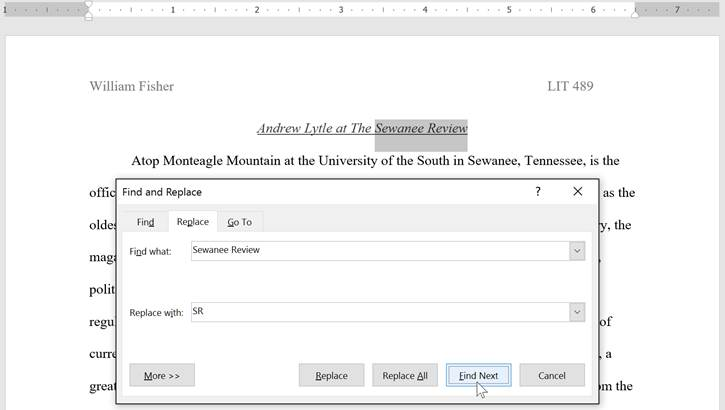
Jika Anda ingin menggantinya, Anda dapat mengklik Ganti untuk mengubah setiap contoh teks. Anda juga dapat mengklik Ganti Semua untuk mengganti setiap teks di seluruh dokumen.

Teks akan diganti.

Setelah selesai, klik Tutup atau Batal untuk menutup kotak dialog.
Untuk opsi pencarian tambahan, klik Lainnya di kotak dialog Temukan dan Ganti. Dari sini, Anda dapat memilih opsi tambahan, seperti mencocokkan huruf besar-kecil dan mengabaikan tanda baca.
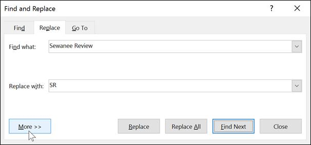
Saat menggunakan Ganti Semua, penting untuk diingat bahwa ia dapat menemukan kecocokan yang tidak Anda antisipasi dan mungkin sebenarnya tidak ingin Anda ubah. Anda hanya boleh menggunakan opsi ini jika Anda benar-benar yakin itu tidak akan menggantikan apa pun yang tidak Anda inginkan.
Tantangan!
Buka dokumen latihan kami.
Dengan menggunakan fitur Temukan, tentukan halaman mana yang menyebutkan Caroline Gordon.
Nama TS Eliot salah eja. Menggantikan semuacontoh Elliot dengan Eliot. Ketika Anda selesai, Anda seharusnya melakukan tiga penggantian.
Nama Allen Tate juga salah eja. Temukan dan Ganti Alan dengan Allen. Petunjuk : Jangan gunakan Ganti Semua. Jika tidak, Anda mungkin tidak sengaja mengganti kata balance.